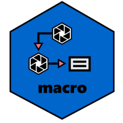

The SAS and R programming languages are very different. One of the major differences is that SAS has a “macro” language, and R does not. The SAS macro language provides a code pre-processor that allows text-based substitution and manipulation of your code before it is executed. Normally, in R, such a facility is not needed. There are times, however, when it would be handy to have such a capability. The macro package provides that capability.
The macro package offers the most basic “macro” functionality, such as:
- Assigning macro variables.
- Conditional macro logic.
- Including code from external files.
- Macro do loops.
- Macro functions.
The macro package will give some consolation to SAS programmers transitioning to R who are accustomed to working with the SAS macro language.
More importantly, the macro functionality allows you to perform some operations that can be messy to perform natively in R. For instance, the macro functions are great for dynamic code generation.
To get an overview of the package, refer to the macro documentation site here. This overview contains links to additional pages to explore the package in depth.
Installation
To install the macro package, you may do so by running the following command from your R console:
Then put the following line at the top of your script:
The macro package will then be loaded, and available for use in your project.
Introductory Video
Check out the following video for a demo of the macro package setup procedure, and a quick overview of the core package features:

Getting Help
If you need help with the macro package, the best place to turn to is the macro web site. This web site offers many examples, and full documentation on every function.
If you want to look at the code for the macro package, visit the github page here.
If you encounter a bug or have a feature request, please submit your issue here
See Also
The macro package is part of the sassy meta-package. The sassy meta-package includes several packages that help make R easier for SAS® programmers. You can read more about the sassy package here.